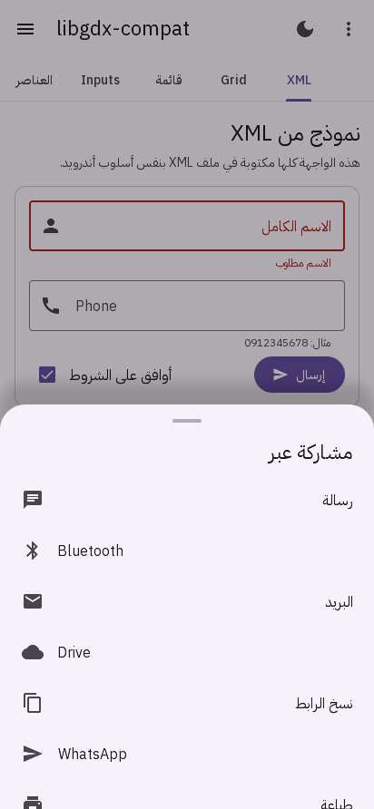
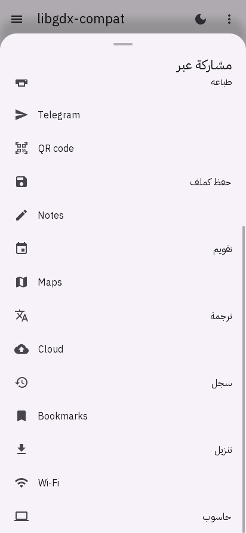
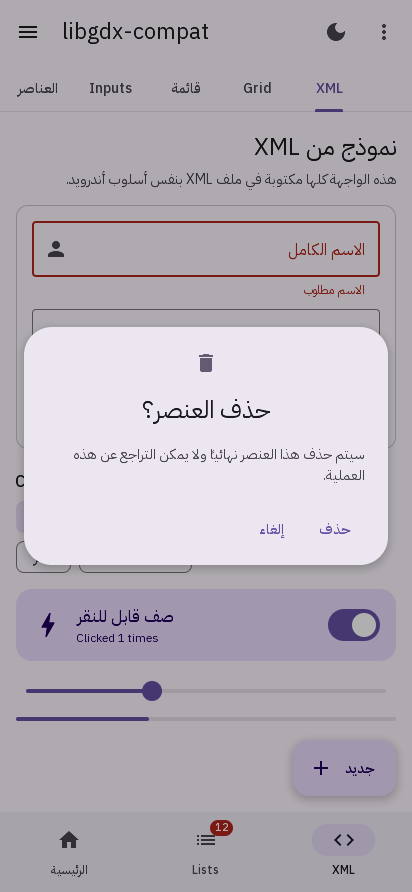
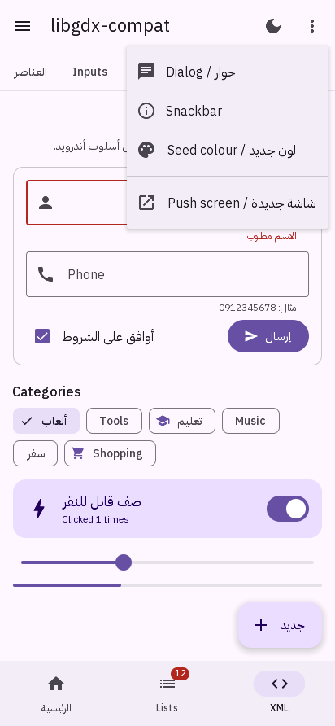
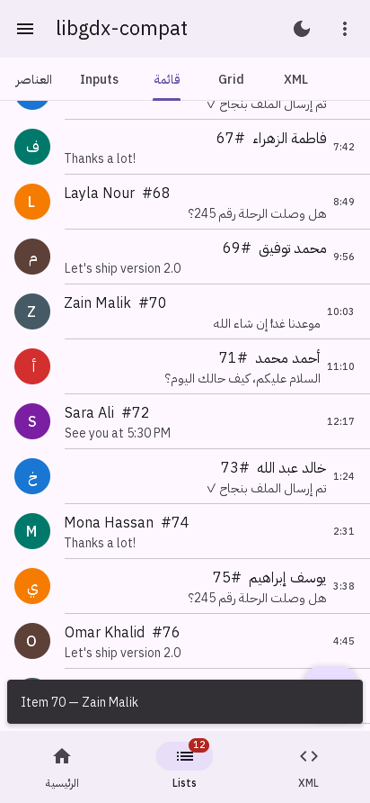

libgdx-compat
libgdx-compat Overlays#
Overlays float above the rest of the UI. They are added to the stage when shown, animate in and out, and close with the back key (Android BACK / desktop ESC) or a tap outside unless you make them non-cancelable.
BottomSheet#

A sheet that slides up from the bottom and follows the finger between three states: hidden, collapsed (peek height) and expanded.
BottomSheet sheet = new BottomSheet(content);
sheet.show(stage);
// or in one line
BottomSheet.show(stage, content);
Options (the BottomSheet setters return the sheet, so they chain):
| Method | Meaning |
|---|---|
setPeekHeight(px) |
height of the collapsed state; default: the whole sheet if it is short, otherwise half the screen |
setFullHeight(true) |
expand to the full available height instead of wrapping the content (use it for lists) |
setHideable(false) |
dragging down stops at the collapsed state |
setDragHandle(false) |
hide the small handle bar |
setDraggable(false) |
no dragging at all |
setModal(false) |
persistent sheet: no dimming, touches reach the screen behind |
setSheetBackground(color) |
sheet colour |
setCancelable(false) |
outside tap and back key do nothing |
Control it from code with expand(), collapse() and dismiss(), and listen to it:
sheet.setCallback(new BottomSheet.Callback() {
@Override public void onStateChanged (BottomSheet s, int state) {
if (state == BottomSheet.EXPANDED) loadMore();
}
@Override public void onSlide (BottomSheet s, float visibleHeight) {
header.getColor().a = visibleHeight / s.getStage().getHeight();
}
});
sheet.setOnDismiss(() -> refresh());
Lists inside a sheet#

Put a RecyclerView or ScrollView inside and it just works: dragging up first expands the sheet, then scrolls the list; dragging down scrolls the list back to its top, then collapses and hides the sheet.
LinearLayout column = LinearLayout.vertical();
column.add(new TextView("Share via", Typography.TITLE_LARGE)).margins(dp(24), 0, dp(24), dp(8));
column.add(shareList).matchWidth().weight(1).height(0);
new BottomSheet(column).setFullHeight(true).show(stage);
AlertDialog#

new AlertDialog()
.setIcon(Icons.DELETE)
.setTitle("Delete item?")
.setMessage("This cannot be undone.")
.setNegativeButton("Cancel", null)
.setPositiveButton("Delete", () -> delete())
.show(stage);
setNeutralButton(text, action)adds a third button on the start side.setItems(new CharSequence[] {"Camera", "Gallery"}, index -> pick(index))shows a list of choices.setView(actor)puts any custom content (a form, a slider…) between the message and the buttons.cancelable(false)forces the user to press a button.
PopupMenu#

A drop-down menu anchored to a view; it picks the side that fits on screen.
moreButton.setOnClick(() -> new PopupMenu()
.add("Edit", Icons.EDIT, () -> edit())
.add("Share", Icons.SHARE, () -> share())
.addDivider()
.add("Delete", Icons.DELETE, () -> delete())
.show(moreButton));
Use showAt(stage, x, y) for a context menu at a touch position.
Snackbar#

A short message at the bottom of the screen. Only one is shown per stage; a new one replaces the old one.
Snackbar.make(stage, "Message archived", Snackbar.LENGTH_LONG)
.setAction("Undo", () -> restore())
.setBottomOffset(dp(80)) // keep it above a bottom navigation bar
.show();
Durations: LENGTH_SHORT (2 s), LENGTH_LONG (3.5 s), LENGTH_INDEFINITE (until dismiss()), or any number of seconds.
Keyboard insets#
Overlays keep clear of the on-screen keyboard using Compat.getKeyboardHeight(). On Android the simplest setup is android:windowSoftInputMode="adjustResize" in the manifest (the demo does this); otherwise report the height yourself with Compat.setKeyboardHeight(px).